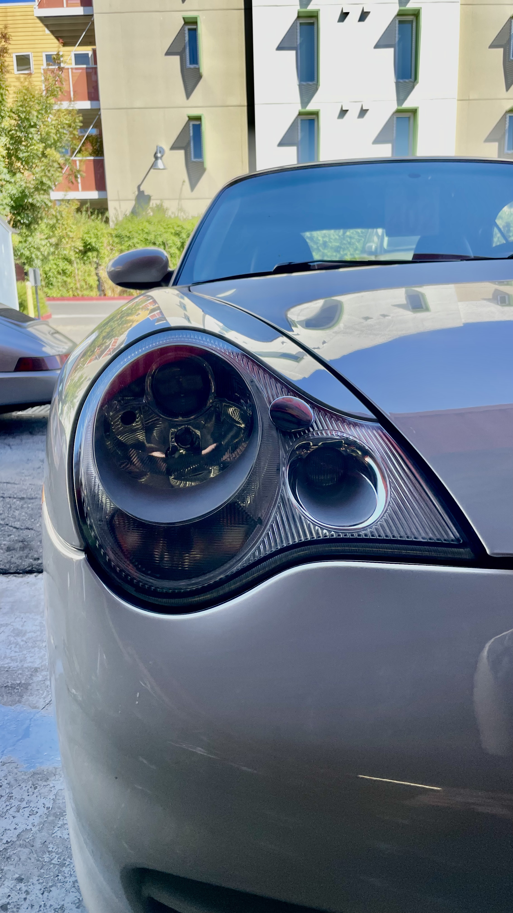
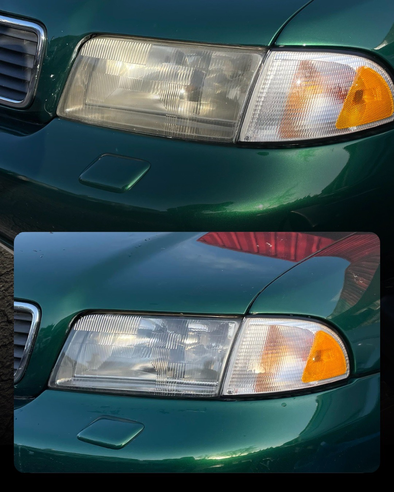
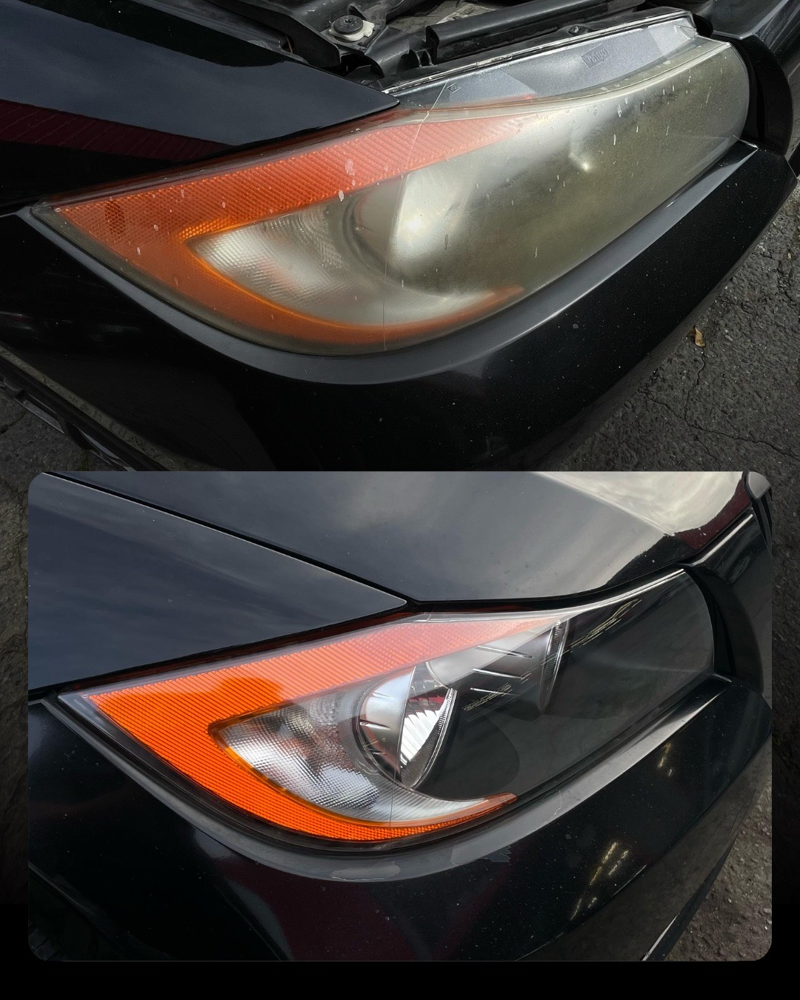
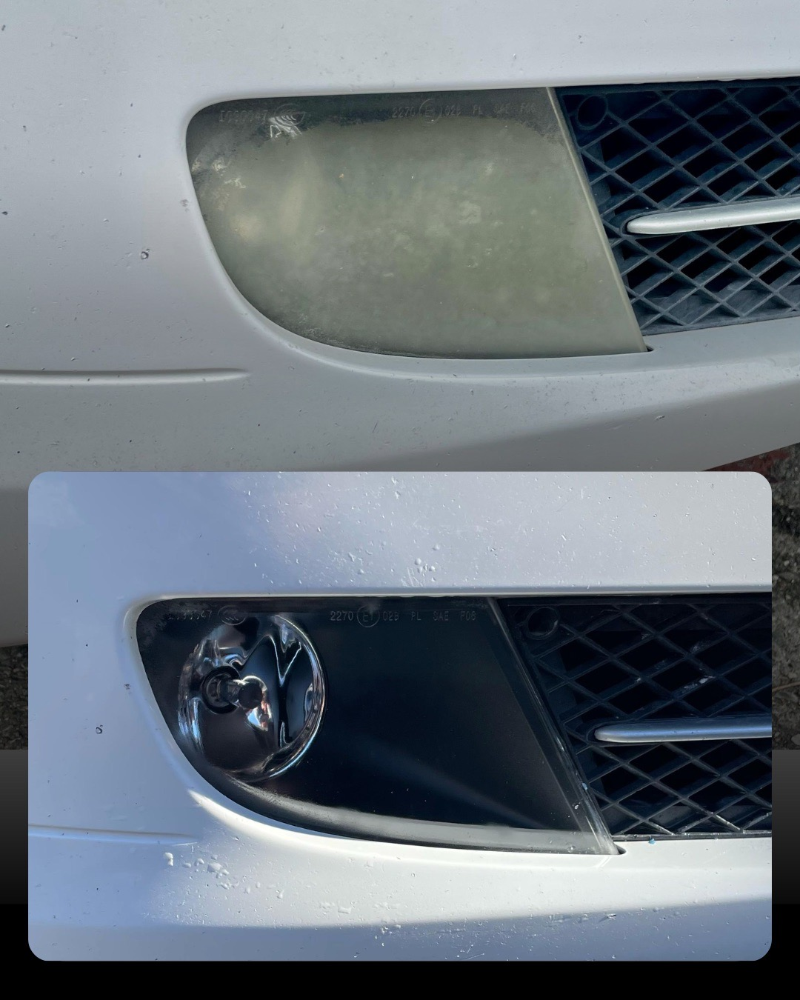
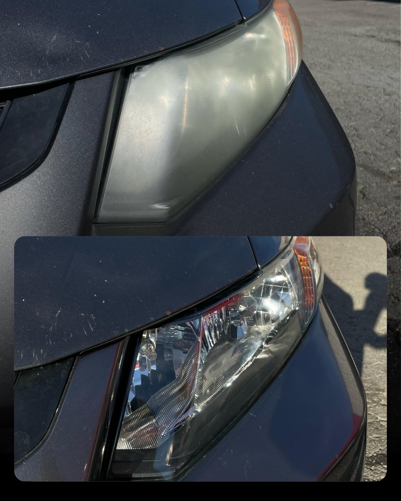
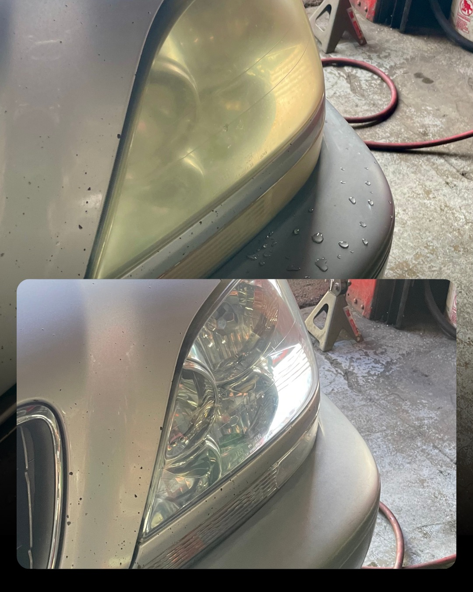
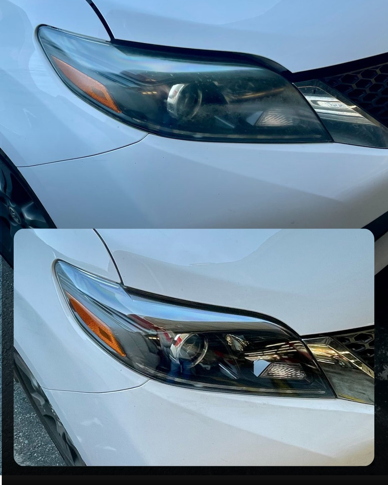
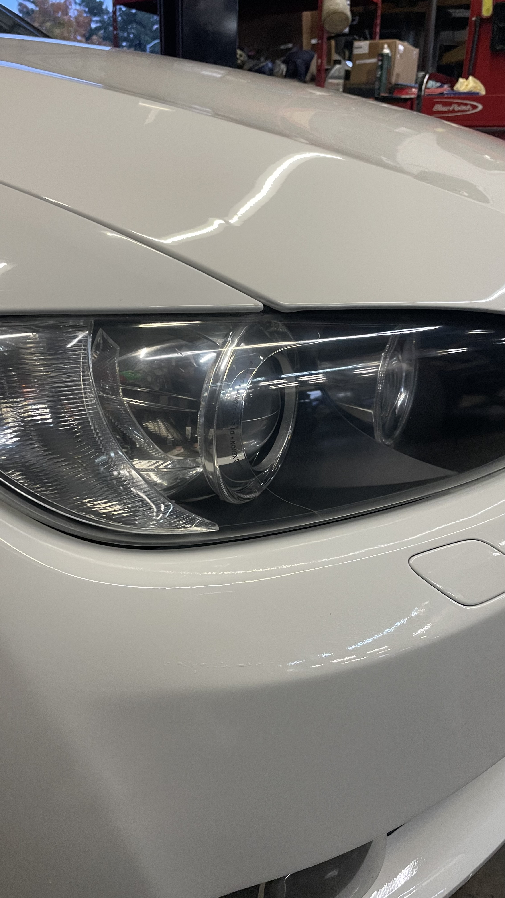
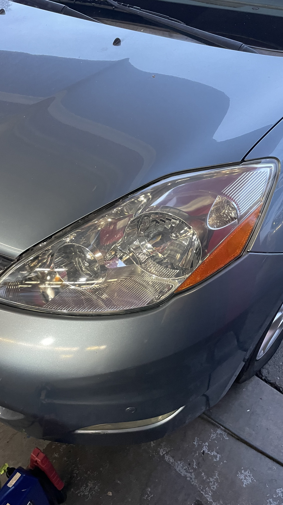

01 / VISIBLE CONDITION
Clouding or yellowing
We review the lens surface and the extent of visible wear before discussing restoration.
01 / AUTOMOTIVE SERVICEHeadlight restoration
Cloudy, yellowed, or weathered lenses are reviewed individually. We confirm whether restoration is a suitable option and explain the scope before work begins.

02 / SERVICE SCOPE
Assessment before recommendation
Lens restoration is considered when the visible condition is appropriate for surface work. Cracks, moisture inside the housing, internal damage, or electrical faults may need a different diagnosis or repair.
01 / VISIBLE CONDITION
We review the lens surface and the extent of visible wear before discussing restoration.
02 / PART CONDITION
Damage beyond the exterior lens can change the right next step. Photos help with an initial review; some conditions require closer inspection.
03 / CONFIRMED PLAN
We discuss the recommended scope and estimate with you before any work is authorized.
03 / CASE RECORDS
Selected original comparisons
Each selected file is one supplied composite: the upper frame shows the earlier condition and the lower frame shows the later condition. These records document individual vehicles; they are not a guarantee of the same result on another lens.






The comparison images are displayed as supplied. The individual photos in the next section show different vehicles and are not part of these pairs.
04 / INDIVIDUAL PHOTOS
Separate completed vehicles
These single photographs show completed vehicles that are different from the cars in the paired comparisons above. They are presented separately, not as before-and-after evidence.


05 / NEXT STEPS
A direct service path
A few details make the first review more useful. The recommended scope depends on the lens and housing condition.
Send the year, make, model, and clear photos of the affected lens.
We review the visible lens condition and clarify what cannot be confirmed from photos alone.
Discuss the recommended work and estimate before deciding how to proceed.
06 / COMMON QUESTIONS
Clear answers, no assumptions
No. Suitability depends on the lens and housing condition. Cracks, internal moisture, internal damage, or electrical faults may require a different repair or diagnosis.
No absolute result is promised. The visible condition and underlying damage affect what is achievable; we discuss expectations after reviewing the specific vehicle.
The selected case gallery includes a BMW 5 Series fog-light comparison. Send details and photos so the specific part can be assessed.
Include the vehicle year, make and model, a short description of the issue, and clear photos of each affected lens.
07 / CONTACTReverso Works
Share the vehicle details and photos. We will review the information and discuss the next step with you.